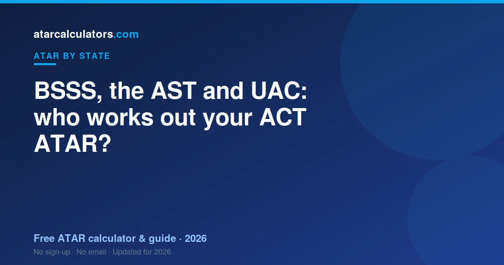

Three parts shape your ACT ATAR. The BSSS, the Board of Senior Secondary Studies, runs your certificate and course framework. The AST, the ACT Scaling Test, helps scale your college scores fairly. UAC, the Universities Admissions Centre, then works out your ATAR from your aggregate and manages your applications. So the BSSS runs your certificate, the AST supports scaling, and UAC gives you your rank.
Key takeaways
- The BSSS runs your ACT Senior Secondary Certificate and course framework.
- The AST (ACT Scaling Test) helps scale college scores fairly.
- UAC works out your ATAR from your aggregate.
- UAC also manages your university applications.
- The BSSS runs your certificate; UAC gives you your rank.

Three parts, three different jobs
The ACT is a little different from some states. Instead of one body doing everything, the work is shared.
The BSSS runs your certificate. The AST supports scaling. UAC works out your ATAR. Knowing which does what saves a lot of confusion.
The rest of this guide breaks down each one, so you know who handles what.
What the BSSS does
The BSSS is the Board of Senior Secondary Studies. It is the body behind your ACT Senior Secondary Certificate.
It sets the course framework that colleges teach. It oversees how courses are assessed. And it issues your certificate at the end of Year 12.
So the BSSS looks after your school qualification. It does not, on its own, work out your ATAR.
What the AST is
The AST is the ACT Scaling Test. Nearly all ATAR students sit it. It plays a special role in keeping scaling fair.
Because colleges mark their own students, scores from different colleges need to line up. The AST gives a common measure that helps scale and moderate those scores.
So the AST is not a course you study. It is a test that supports fair scaling across the whole ACT. Your college marks and the AST work together.
What UAC does
UAC is the Universities Admissions Centre. It works out your ATAR and manages your university applications.
- It takes your scaled scores and builds your aggregate.
- It ranks your aggregate to produce your ATAR.
- It receives your applications and sends offers on behalf of universities.
So UAC is the body that turns your results into a rank and handles your applications. This is the key point many students miss. Your ATAR comes from UAC.
Why the difference matters
Knowing who does what helps you ask the right questions to the right place. It saves time and stress.
If your question is about your certificate or courses, that is the BSSS. If it is about the scaling test, that is the AST. If it is about your ATAR or applications, that is UAC.
A simple way to remember it: the BSSS runs your certificate, UAC gives you your rank. See how your rank is built in our ACT ATAR guide.
ACT and NSW both use UAC
The ACT and NSW both use UAC to calculate ATARs and manage applications. This is why applying to NSW universities from the ACT is simple.
Even so, the ACT has its own certificate and its own scaling, including the AST. So the two systems share UAC, but they are not identical. You are ranked as an ACT student.
How you apply through UAC
You apply through UAC for the courses you want, listing your preferences in order. UAC then considers your ATAR and any prerequisites.
Because UAC covers both the ACT and NSW, you can list courses at ANU, the University of Canberra, and NSW universities in the same application.
Key dates with the BSSS and UAC
There are a few key moments. UAC releases your ATAR in mid-December, and the BSSS releases your certificate results around the same time. University offers follow in rounds.
Application deadlines matter, so note them early. Our ACT release date guide has the timing, and you should confirm the exact dates on the UAC and BSSS websites.
Common questions
Who calculates the ACT ATAR?
UAC, the Universities Admissions Centre, calculates the ACT ATAR from your aggregate. The BSSS runs your ACT Senior Secondary Certificate, and the AST helps scale your college scores fairly.
What does the BSSS do?
The BSSS, the Board of Senior Secondary Studies, runs your ACT Senior Secondary Certificate. It sets the course framework, oversees assessment, and issues your certificate. It does not, on its own, work out your ATAR.
What is the AST?
The AST is the ACT Scaling Test. Nearly all ATAR students sit it. It gives a common measure used to scale and moderate scores fairly between colleges.
Does the BSSS or UAC calculate my ATAR?
UAC calculates your ATAR. The BSSS runs your certificate and course framework, and the AST supports scaling. UAC builds your aggregate, ranks it into an ATAR, and manages your applications.
Do the ACT and NSW use the same system?
They both use UAC to calculate ATARs and manage applications, so applying interstate is simple. But the ACT has its own certificate and its own scaling, including the AST, so the two are not identical.
Do I apply for university through UAC in the ACT?
Yes. You apply through UAC and list your course preferences. Because UAC covers the ACT and NSW, you can list ANU, University of Canberra and NSW courses in the same application.
Who do I contact about my results?
Contact the BSSS about your certificate or courses. Contact UAC about your ATAR or applications. For the scaling test, information comes through your college and the AST process.